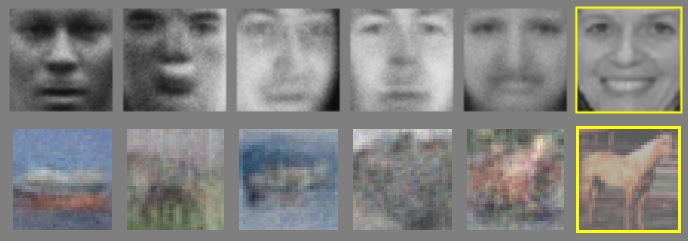

AI Output Is (Not) Fake
Could We Coexist?
Abstract
When is data "fake"? AI-generated data may be impossible to detect. To differentiate human and AI creations, we may have to make intent and context explicit. We must attach authorship and accountability for handling AI creator systems to the human users or organizations that utilize them.
The Setup
Machine Learning (ML) has enjoyed an explosion of activity and . In the limelight, most systems belong to the “Deep Learning” paradigm—they are connectionist, and rely on correlational statistical modeling at scale.
This article will attempt to clarify the implications and expectations which accompany these properties of the large ML systems we see on the news. We’ll ask what they can do, what they may be able to do, and how we may engage in a world where they have become tools of the mainstream.
Not too long into the Deep Learning era, generative models emerged that produced seemingly realistic outputs—paragraphs of coherent text telling a cohesive story depicting accurate, common sense references and behaviors. Or paintings of fantastical scenes, illustrations of attractive faces, colored and shaded so exquisitely you could even appreciate the brush strokes. And so much more—from music to voice lines to robot movement or nearly prescient recommendations (well, sometimes).
The most famous examples, now nearly household names, tackle the vision and text modalities. You’ve probably already heard of, or used, such systems as “magic erasure” tools in photo-editing software, face swapping filters in social media apps, “AI Art” generators (DALL-E, Craiyon, …), machine translation services, and text generators (GPT, ChatGPT, …).
And there are many other systems competing in this area. The largest tech companies are active participants - though you may hear more often of one or the other. Some are also open, or community-led efforts! See for example Stable Diffusion, BLOOM, or Open Assistant.

GANs Generative Adversarial Networks were one of the earliest generative models with a bit of a reputation. Machine-generated graphics without human creative input felt like magic! Crude magic. You needed to show some courtesy, suspend some disbelief, to see past the quality issues and note the rough, but parse-able, caricature of the intended subject.
Compare to the following illustration. There are many caveats we’ll discuss later. For now, examine the neck a little closer…

The story is similar for text generation
LLMs Large Language Models (LLMs) are a more recent development. The foundation for them is, appropriately, Language Models (LMs), which are systems trained to produce output in a certain “language”, following faithfully all the curves of detail in, say, the language’s grammar, semantics, cultural context, and of course the specifics of the domain of discourse if one can be specified.
But, things would soon change...
The quality improves, massively, and the shock disrupts society’s perceptions.
What challenges do we face as such systems “enter” an increasingly turbulent skills market?
Social contracts must be amended to manage and benefit from the deployment of intelligent systems at scale.
These systems disrupt information availability, creative industries, and individual opportunities and freedoms.
ChatGPT in Education Copilot and Stable Diffusion lawsuits AI-generated quick articles in Buzzfeed ChatGPT to E-book service AI-generators as co-authors AI models as lawyers
Statistical Modeling How the Models (maybe) Think
What Goes In?
These systems do not cut their outputs out of whole cloth. The generation is often incremental: involving refinement or build-up. Recently, it is also often made conditional on user input. Although even the earliest systems were conditional, we did not confer that badge on most until sufficient customizability was provided.
So when we speak of generation in modern ML/AI, an implicit part of it is the context provided by the training data and by the user input.
- Culture: The training data will inevitably manifest an emergent property that reflects the social forces present during the making of the data set, possibly over many decades.
- Cultures may represent more than geographic regions or ethnicities. There may be numerous implicit cultures tied to topics, activities, or digital venues of communication.
- Subtle manifestations of a culture, reflected in linguistic patterns, or expected common sense knowledge, can be found in data scraped from the Web, and so may affect the conditioning at both the input and output ends of a model.
- Information: Accepted facts, or “factual knowledge”, and their representation, retrievability, and accuracy in a Machine Learning system.
- For example, a Question Answering system responding to a query for “the capital city of Egypt” would be correct if it answered “Cairo”, and wrong otherwise.
- Skills: For systems capable of applying one or more learned processes on unseen data, producing possibly unseen data—unlike information or factual knowledge.
- That’s the draw for systems like “AI Art Generators” which can apply what looks like an artist’s style to a scene they had not painted before.
- Local Context: Environmental signals, or user input (with agency or otherwise) is any additional conditioning (incorporated or ignored) that clarifies the user’s intent from using the system.
- A cat photo detector may need no additional context. But a generator for cat pictures may require details on the breed, scene composition, subject pose, and so on.
What Comes Out?
What Happens Inside?
- Nature of NNs
- GANs, Diffusion
- LMs, Instruct LMs
So LLMs look like they’re doing reasoning. And that’s… because they are! Or they’re acting it out, at least. Err…
Suppose I train my incredible parrot to sing Jean Valjean’s lines of Les Miserables. If I’m not careful, it might learn to sing them without waiting for the other actor’s lines to finish. That’s kind of what a weak language model would do–start parroting things it remembers, stringing them together as best it could, with no regard for local context outside its own generation.
LLMs however are much larger, and can afford to learn more details from the strings it sees as input. Add to that some recent additions to the training method and you get systems trained to wait for the cue. These systems utilize their larger modeling capacity to memorize more of “strings that fit together”, and do so while being optimized to output reasonable responses given complete, coherent queries, or prompts.
The result may, and indeed does, look remarkably close to bona fide reasoning. For the model has found among its vast, and very well-sorted, memory of strings a selection that fits an expected response to a coherent query, as opposed to a continuation to an unguided prefix as in earlier auto-regressive LM systems.
Faking Things, Effortlessly?
Deep fakes are pieces of media generated by an ML system. It is the name given by popular culture to outputs by Deep Learning models that are intended to deceive the observer as to the identity of the subject they depict. A Deep Fake of a person could be a video, life-like and accurate, of an event that never happened but still “looks real”. The fabricated media conveys a context and information content that had never been captured in an authentic recording of the actual subject.
Note that the intent of use need not be nefarious—similar technology can generate lip-synced videos for video games, for example. And it has already been in use for a while in CGI for big-budget movies (consider for example Avatar). But it could also be used to fake statements by political figures, or recordings of illegal activity incriminating innocents. See example news stories here, here, and here.

So as the story of deep fakes found its way to news pieces and the cultural consciousness, questions arose on how society, and individuals, should, or could, react to the existence of such pieces of data, and to the ability to generate them at will. And so, early on, an effort emerged in parallel to the development of generative models: detection of machine-generated content.
This Is Not Tom Cruise - We Made the Best Deep Fake on the Internet b j y
What To Look For When Detecting?
Detecting “Fakes” By Validating Form
- Example of obviously bad face photo generations
- Example of obviously bad video generation
- Example of obviously bad text generation
Early detectors focused on form. This is one of the easiest facets for a human to verify in a recording of a piece of information.
Fobaar
- Sentences must adhere to the syntactic rules of the language, many of which are applied before world interpretations are attached to the words. Noun-Verb agreement, and sentence order for example.
- Photos must satisfy some very complex expectations for its depicted recording of light in the scene, structure of objects, and the quality of the depiction, to name a few. So a photo of a human hand with 6 fingers would look weird, as would a painting of a flower with many color and stroke glitches visible.
Quux
- !Bad example of flower generation from early GANs.
- !Very good example of a new diffusion output with 6-fingered hands.
- !Example of early text generation with bad grammar.
- Nonsense Math text accepted at a sham journal, with a review
- Sokal Hoax: A nonsense paper written in the style of “postmodern” social studies papers at the time
Detecting “Fakes” by Judging Style
- “Academic freeform question answers” that use simpler language than expected, or an unusual semi-formal style.
If form is insufficient, what else can we look at? For humans, there exists a sense, of sorts, which models the unconscious expectations of normality within a domain or a context. For the form of natural entities, like human faces or animal bodies, we call it the uncanny valley.
This sense activates when the for is “close to acceptable” but not quite right. And it has analogues in contexts that can be less upsetting, like noticing that a piece of fiction does not match the style of a certain writer, or that a series of decisions appear incongruous with a stated objective of the decision-maker.
In effect, it functions as an unconscious anomaly-detector. The analogue of it for detecting machine-generated content is, effectively, to attempt to screen for “intruders”: Authors unaware of or unfamiliar with the established norms of style in the community of readers accessing their output. In the case of machine-generated essays on literature, for example, that could manifest as an unusually sophisticated style in a paper handed in by a first-year student.
But consider: Where do we draw the line for such a detector? Is a genuine human author prohibited from writing comedies, if all previous, established output of his has been in horror?
Detecting “Fakes” by Verifying Substance
Should you ask a person a question with a single factual answer, how likely are they to answer correctly? Such a strange case, to be sure. We know nothing of the extent of his or her knowledge in the topic of our test, or in any topic for that matter. We started with some implicit assumptions: That they have a similar experience to ours in a similar society.
“Detecting” Fakes By Authenticating The Source
Verifying the authorship of a recording, instead of the content, is a very different beast. At this point there is nothing inherent about the datum to color it differently for having been the fruit of a person’s toil, compared to the generation of an ML system. The source of the data does give it a color, distinct from another piece of data with the same content from a different source.
Unlike in cryptographic random number generation, for example, the color here is ultimately a change in the context of the consumption of the data.
This context may suggest that I, as a reader of some article, should note that it had an AI as a co-author. It would likely suggest so in a similar manner to when warning spectators of a painting with no established authorship, or when noting that a piece of news has not been independently verified.
The reaction to this annotation of the data would differ depending on the extended context of the consumer. It may be prudent to disregard a news piece until verified, or double check innocuous statistics mentioned in a scholarly article. However, such reactions may also apply given human authorship, depending on the consumer’s criteria.
Then note!
This method, then, is not really one for detection. It allows society or a community to establish chains of blame should a piece of machine-generated content have unintended or malicious effects.
It is an extension of the social contract of attribution and responsibility which places human agents at the center of decision-making, even in the presence of automated systems.
The Enigma in Text
- Basic AR modeling
- Intro Context, Prefixes, Prompts
- Segue to next section for meaning as bound to words and language
- What’s it mean for a system to understand a world through ungrounded symbols (i.e. unconnected to other modalities).
Bit-by-Bit Generation Leaves A Lot To The Imagination
Language modeling is the task of learning a function that produces sentences which “make sense” in a certain language. One of the earliest attempts to do so utilizes an RNN to generate a sentence part-by-part (as characters or words). At every step, the network can see:
- $m_t$: A persistent fixed-size memory vector which it updates at every step.
- $z_t$: The identity of the part, or token, it generated in the previous step.
Symbolically, the network $f$ generates the token at time $t$ according to: $$z_t, m_t \gets f(z_{t-1}, m_{t-1})$$
However $f$ is formulated, it always uses as arguments the two signals (1. & 2.) defined above. It does not consider tokens generated before the last, and cannot use a long-term memory beyond what the fixed-size vector $m$ can provide.
This seems quite limited at first glance, and yet such models were more capable than expected. Check for example Karpathy’s blogpost on RNNs, which touches on sentence generation by a character-based RNN LM. See also AlKhamissi’s live example of a character-based RNN LM trained to generate Arabic poetry.
Context
What networks tasked with generation may lack, besides world knowledge and language understanding, is local context. The models described above were often given a short sequence of tokens, some words or a phrase, to kick-start the generation. This is called the prefix of generation. Or you may think of it as a writing prompt, but we use that term for a slightly different idea later.
Now consider!
- How much can a person say about something given a prompt only a few words long?
- How do they know the things they mention?
- How do they pick the things and what to say about them?
How Do Large Language Models See?
- Present MLM, Instruct (generative general seq-to-seq signal-response systems), and RLHF.
- Discuss the data sources.
- ChatGPT
…
The Philosophy Of Information And Data
- Check the Stanford Encyclopedia of Philosophy.
- Wittgenstein?
- Symbol Grounding
What Makes Data… Information?
- Justified True Belief. Illustrate how it applies to “belief in inferred information through trusted recordings as data”.
What Makes Data Real?
- Form. Syntax. Validity of Construction.
- Plausibility within a context.
- What prevents a human from submitting a “Unicorns in Space” fanfiction to the Nebula awards?
- Consistency with other pieces of data.
- Stamps of trust: Web 3.0? Require a cryptographic signature of any authoritative piece of data that can be forged. Would require expanding the reliance on and acceptance and understanding of cryptographic signing in every-day life.
AI Art, And Chat Bots As (Co-)Authors
- Ethics of training
- Toil
- Tools to augment, not to replace/compete
- Humans like to do stuff…
Draft
-
It’s so easy for LLMs to synthesize outputs, making it very difficult for us humans to figure out attribution for where they came from.
- Are we consistently asking LLMs to answer things whose answers are derivable from existing literature? Too close to an LM objective?
-
Humans want to be doing the high-level stuff. We don’t want to automate that. And doing them allows us to consider the fairness of assuming responsibility for their outcomes. If they’re fully decided by an automated system there would be no fairness or willingness to assume responsibility for them.
-
We’re already accustomed to and welcoming of automation in the search and research spaces. Med students (Dr. Mike’s comments on House tv show) are now better served by being able to search more efficiently for relevant data and finding correct information, as opposed to knowing the most by heart.
-
Knowledge work, not creative work, is most amenable to automation.
- Knowledge work seeks to produce “functional answers” to questions do not specifically require the presence of a human in either the question formulation or the answer implementation.
- Now that sounds a little weird so let’s ponder a little.
- If a role like software engineering could be perfectly automated, what do we get and what do we miss? That depends on its explicit definition and its culturally accepted, but not codified, emergent definition.
- On the one hand, we could imagine a system could be given an informal specification and it would return a working source code that does best effort to satisfy the specification. Sounds perfect in the sense that the role of software engineering, as usually written out in recruitment drives, for example, seems to be satisfied by this system.
- On the other hand, experts in the field and outside that are in that role or must interact with it would probably note some glaring omissions, which are sometimes included a job ad but not necessarily. For example:
- Building systems that fit the design expectations of other systems.
- Communicating with the client to clarify the intention or “real meaning” of the informal specification, by clearing up constraints, interpretations of terms and relations, and unstated preferences once the options are actually available to the client.
- ???
- As AI generation takes hold of the different levels of the knowledge market to various degrees, we may quickly find that the information we’re presented with is the result of the AI interpreting the generated outputs of another AI which were based on human input of less information content. Or, even worse, on the output of another AI which was based on… You get the picture.
- Imagine the case for purchases of some new personal equipment.
- For a website that used to present human-written reviews about different products, you may find that they’ve started using machine generators to write what passes for authentic, at least for now.
- Then you may look for comparisons or reviews on your favorite search engine and find a condensed version of the claims of the article above, presented as the search engine bot’s synthetic answer with a helpful inline citation number next to the product name.
- Will AI generative models make software engineering roles obsolete? Possibly those that were, if one may make an unsubstantiated claim on the average attractiveness of an activity, boring.
- Will they replace physicists or civil engineers? No, for different reasons.
- In physics, theoretical or in its various industry sub-fields, the exploration and design of the discoveries is an integral part in building society. Consider that the way a new discovery is formulated and the applications that inspired its pursuit must, eventually, find their place as a part of the cultural output and history of human society, wherein they would affect later applications and discoveries. And those would be, possibly in very subtle ways, affected by how the original discoveries came to be, and how they were shaped by and affected the humans who discovered them.
- “We’re not just looking for a sound answer. How the proof looks and feels is important too. And you can’t always simulate society’s preferences in that area by optimizing for proof length.”
- For civil engineering, again just as an example, machine automation was already an accepted part of the process and repertoire since long ago. The introduction of a new, more capable automation tool would not negate the expectation and need for the engineer’s creative view on the intended output, and the attached responsibility to the human engineer making the decisions that get implemented on the ground. If we cannot hold an AI accountable for the results of its suggested designs, human society would, probably, reject it a legitimate producer.
- In physics, theoretical or in its various industry sub-fields, the exploration and design of the discoveries is an integral part in building society. Consider that the way a new discovery is formulated and the applications that inspired its pursuit must, eventually, find their place as a part of the cultural output and history of human society, wherein they would affect later applications and discoveries. And those would be, possibly in very subtle ways, affected by how the original discoveries came to be, and how they were shaped by and affected the humans who discovered them.
- Except, of course, they could be replaced… For different reasons.
- Dunno about physics.
- A company may accept that risk and decide to have one model generating the output of 10 engineers and one senior engineer who signs off on them…
- And it would be insanely profitable. For the first 10 years.
- Then we start wondering where to get the next senior engineer from. No one’s doing it anymore to get to senior level.
- And we start wondering why no one’s buying the flats anymore. Young people aren’t allowed the luxury of a respectable pay in a stimulating job. No one cares.
- And it all brings us to the focal point of this section: Why are we doing all that? What use is it? What do we want to do with it? Where do we want it to lead us? We do we think it will lead us?
- We live in a society meant to be for humans. That the intention. And humans are not machines just seeking some functional answers to the latest functional question they faced. Humans want to communicate together, and do things! Intellectually stimulating things! Creative! Athletic! And on and on.
- Given the option of a machine that draws for you given an input text, some people may love it, but most who loved the art itself would continue to do it. And more of them would be born still. Question is, is society, and the prevalent morality and intellectual maturity, ready support the coexistence of both kinds of people?
- And given the option of a machine that writes or designs or implements some system for a software engineer or an architect or a lego builder: Would they, on average, choose to still be involved in their particular disciplines even if given the option of taking the same pay while doing nothing? Probably. At least once society stabilizes following the shock of pervasive logic automation and the introduction of universal pay.